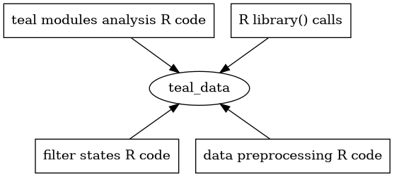

Introduction
Reproducibility is paramount in the pharmaceutical industry. Accurate and consistent results are essential to ensure high-quality research and the safety of patients. By prioritizing reproducibility, researchers can validate their methods, confirm their findings, and contribute to the advancement of the field.
The teal.code package provides the qenv
class that facilitates code reproducibility. Code is passed to a
qenv object, where is evaluated in a specific environment.
qenv also stores the code so that it can be retrieved on
request.
The teal_data class, which serves as the primary data
interface for teal applications, inherits this code
tracking behavior from qenv.
Preparing data for a teal application
All teal applications run on data provided in a
teal_data object. Data objects are stored and modified
within the environment of the teal_data object and all
R code used is tracked, which allows for the code to be
evaluated and executed in the teal application, and
reproduced outside the teal application. This includes data
loading, preprocessing, filtering, transformations, and plotting,
etc.
The teal_data object makes it easy for users to
reproduce and validate the results of their analyses.

Learn more about the use of teal_data in the teal.data
package vignettes.
Show R Code and Reporter
In both the teal.modules.clinical and
teal.modules.general packages, you’ll find that most
modules include a convenient Show R Code button. When this
button is clicked, a modal window appears, revealing the R
code responsible for generating the module’s output. This functionality
is achieved by inspecting the teal_data object and
retrieving code from it. With the Show R Code button, users
can easily copy and independently run the code to reproduce the analysis
presented in the teal module.

The Reporter feature also leverages the teal_data object
in its operation. Much like the Show R Code mechanism, the
code displayed in a Reporter Card is extracted from the
teal_data object.

To learn more about the Reporter feature, please visit
the teal.reporter
documentation.
Overall, qenv from teal.code and its child
class, teal_data, are powerful tools for ensuring code
reproducibility and promoting high-quality research in the
R programming language.